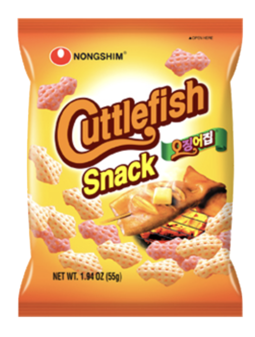
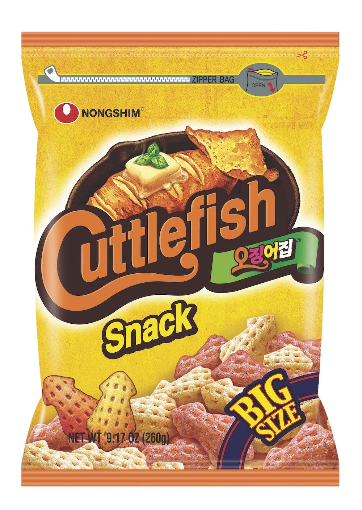
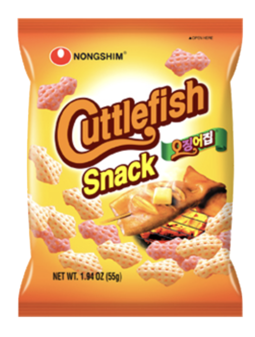
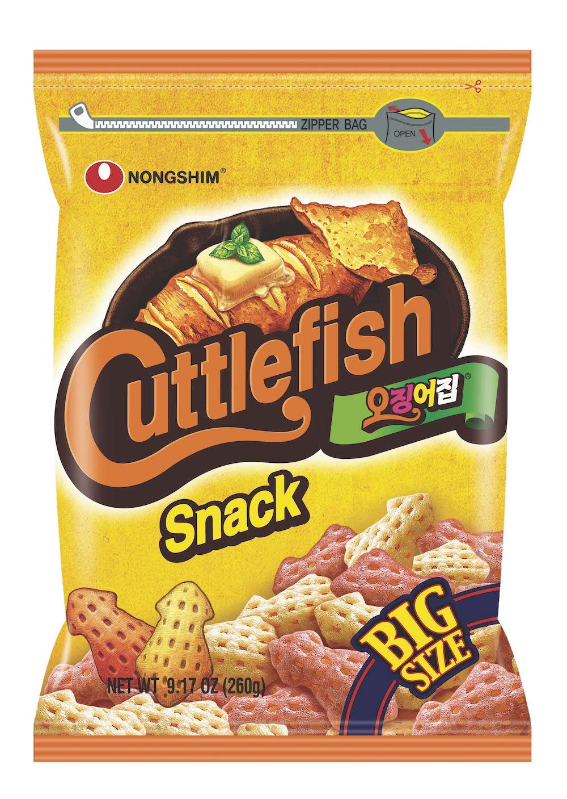

Potato Snack
Weight: unknown
Year of Release: 1972
Rating: 3/5
Notable flavors: potato
While I didn't try this snack, my sister has and considers it a meh. She says it tastes similar to regular potato chips. It has a healthy taste and is less salty compared to other potato chip brands she's tried. It's not terrible, but there isn't anything special in terms of taste that makes it stand out.
 


